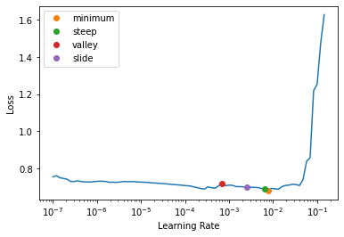
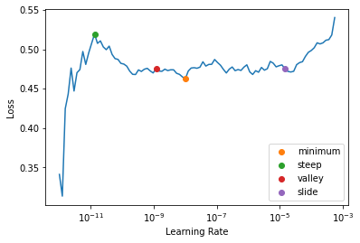

Using GPU #1: GeForce GTX 1080 TiGLUE classification tasks
This notebook demonstrates how we can use Blurr to tackle the General Language Understanding Evaluation(GLUE) benchmark tasks.
GLUE tasks
| Abbr | Name | Task type | Description | Size | Metrics |
|---|---|---|---|---|---|
| CoLA | Corpus of Linguistic Acceptability | Single-Sentence Task | Predict whether a sequence is a grammatical English sentence | 8.5k | Matthews corr. |
| SST-2 | Stanford Sentiment Treebank | Single-Sentence Task | Predict the sentiment of a given sentence | 67k | Accuracy |
| MRPC | Microsoft Research Paraphrase Corpus | Similarity and Paraphrase Tasks | Predict whether two sentences are semantically equivalent | 3.7k | F1/Accuracy |
| SST-B | Semantic Textual Similarity Benchmark | Similarity and Paraphrase Tasks | Predict the similarity score for two sentences on a scale from 1 to 5 | 7k | Pearson/Spearman corr. |
| QQP | Quora question pair | Similarity and Paraphrase Tasks | Predict if two questions are a paraphrase of one another | 364k | F1/Accuracy |
| MNLI | Mulit-Genre Natural Language Inference | Inference Tasks | Predict whether the premise entails, contradicts or is neutral to the hypothesis | 393k | Accuracy |
| QNLI | Stanford Question Answering Dataset | Inference Tasks | Predict whether the context sentence contains the answer to the question | 105k | Accuracy |
| RTE | Recognize Textual Entailment | Inference Tasks | Predict whether one sentece entails another | 2.5k | Accuracy |
| WNLI | Winograd Schema Challenge | Inference Tasks | Predict if the sentence with the pronoun substituted is entailed by the original sentence | 634 | Accuracy |
Define the task and hyperparmeters
We’ll use the “distilroberta-base” checkpoint for this example, but if you want to try an architecture that returns token_type_ids for example, you can use something like bert-cased.
task = "mrpc"
task_meta = glue_tasks[task]
train_ds_name = task_meta["dataset_names"]["train"]
valid_ds_name = task_meta["dataset_names"]["valid"]
test_ds_name = task_meta["dataset_names"]["test"]
task_inputs = task_meta["inputs"]
task_target = task_meta["target"]
task_metrics = task_meta["metric_funcs"]
pretrained_model_name = "distilroberta-base" # bert-base-cased | distilroberta-base
bsz = 16
val_bsz = bsz * 2Prepare the datasets
Let’s start by building our DataBlock. We’ll load the MRPC datset from huggingface’s datasets library which will be cached after downloading via the load_dataset method. For more information on the datasets API, see the documentation here.
raw_datasets = load_dataset("glue", task)
print(f"{raw_datasets}\n")
print(f"{raw_datasets[train_ds_name][0]}\n")
print(f"{raw_datasets[train_ds_name].features}\n")Reusing dataset glue (/home/wgilliam/.cache/huggingface/datasets/glue/mrpc/1.0.0/dacbe3125aa31d7f70367a07a8a9e72a5a0bfeb5fc42e75c9db75b96da6053ad)DatasetDict({
train: Dataset({
features: ['idx', 'label', 'sentence1', 'sentence2'],
num_rows: 3668
})
validation: Dataset({
features: ['idx', 'label', 'sentence1', 'sentence2'],
num_rows: 408
})
test: Dataset({
features: ['idx', 'label', 'sentence1', 'sentence2'],
num_rows: 1725
})
})
{'idx': 0, 'label': 1, 'sentence1': 'Amrozi accused his brother , whom he called " the witness " , of deliberately distorting his evidence .', 'sentence2': 'Referring to him as only " the witness " , Amrozi accused his brother of deliberately distorting his evidence .'}
{'idx': Value(dtype='int32', id=None), 'label': ClassLabel(num_classes=2, names=['not_equivalent', 'equivalent'], names_file=None, id=None), 'sentence1': Value(dtype='string', id=None), 'sentence2': Value(dtype='string', id=None)}
There are a variety of ways we can preprocess the dataset for DataBlock consumption. For example, we could push the data into a DataFrame, add a boolean is_valid column, and use the ColSplitter method to define our train/validation splits like this:
raw_train_df = pd.DataFrame(raw_datasets[train_ds_name], columns=list(raw_datasets[train_ds_name].features.keys()))
raw_train_df["is_valid"] = False
raw_valid_df = pd.DataFrame(raw_datasets[valid_ds_name], columns=list(raw_datasets[train_ds_name].features.keys()))
raw_valid_df["is_valid"] = True
raw_df = pd.concat([raw_train_df, raw_valid_df])
print(len(raw_df))
raw_df.head()4076| idx | label | sentence1 | sentence2 | is_valid | |
|---|---|---|---|---|---|
| 0 | 0 | 1 | Amrozi accused his brother , whom he called " the witness " , of deliberately distorting his evidence . | Referring to him as only " the witness " , Amrozi accused his brother of deliberately distorting his evidence . | False |
| 1 | 1 | 0 | Yucaipa owned Dominick 's before selling the chain to Safeway in 1998 for $ 2.5 billion . | Yucaipa bought Dominick 's in 1995 for $ 693 million and sold it to Safeway for $ 1.8 billion in 1998 . | False |
| 2 | 2 | 1 | They had published an advertisement on the Internet on June 10 , offering the cargo for sale , he added . | On June 10 , the ship 's owners had published an advertisement on the Internet , offering the explosives for sale . | False |
| 3 | 3 | 0 | Around 0335 GMT , Tab shares were up 19 cents , or 4.4 % , at A $ 4.56 , having earlier set a record high of A $ 4.57 . | Tab shares jumped 20 cents , or 4.6 % , to set a record closing high at A $ 4.57 . | False |
| 4 | 4 | 1 | The stock rose $ 2.11 , or about 11 percent , to close Friday at $ 21.51 on the New York Stock Exchange . | PG & E Corp. shares jumped $ 1.63 or 8 percent to $ 21.03 on the New York Stock Exchange on Friday . | False |
Another option is to capture the indexes for both train and validation sets, use the datasets concatenate_datasets to put them into a single dataset, and finally use the IndexSplitter method to define our train/validation splits as such:
n_train, n_valid = raw_datasets[train_ds_name].num_rows, raw_datasets[valid_ds_name].num_rows
train_idxs, valid_idxs = L(range(n_train)), L(range(n_train, n_train + n_valid))
raw_ds = concatenate_datasets([raw_datasets[train_ds_name], raw_datasets[valid_ds_name]])Mid-level API
Prepare the huggingface objects
How many classes are we working with? Depending on your approach above, you can do one of the two approaches below.
n_lbls = raw_df[task_target].nunique()
n_lbls2n_lbls = len(set([item[task_target] for item in raw_ds]))
n_lbls2model_cls = AutoModelForSequenceClassification
config = AutoConfig.from_pretrained(pretrained_model_name)
config.num_labels = n_lbls
hf_arch, hf_config, hf_tokenizer, hf_model = get_hf_objects(pretrained_model_name, model_cls=model_cls, config=config)
print(hf_arch)
print(type(hf_config))
print(type(hf_tokenizer))
print(type(hf_model))roberta
<class 'transformers.models.roberta.configuration_roberta.RobertaConfig'>
<class 'transformers.models.roberta.tokenization_roberta_fast.RobertaTokenizerFast'>
<class 'transformers.models.roberta.modeling_roberta.RobertaForSequenceClassification'>Build the DataBlock
blocks = (TextBlock(hf_arch, hf_config, hf_tokenizer, hf_model), CategoryBlock())
def get_x(r, attr):
return r[attr] if (isinstance(attr, str)) else tuple(r[inp] for inp in attr)
dblock = DataBlock(blocks=blocks, get_x=partial(get_x, attr=task_inputs), get_y=ItemGetter(task_target), splitter=IndexSplitter(valid_idxs))dls = dblock.dataloaders(raw_ds, bs=bsz, val_bs=val_bsz)b = dls.one_batch()
len(b), b[0]["input_ids"].shape, b[1].shape(2, torch.Size([16, 103]), torch.Size([16]))if "token_type_ids" in b[0]:
print(
[
(hf_tokenizer.convert_ids_to_tokens(inp_id.item()), inp_id.item(), tt_id.item())
for inp_id, tt_id in zip(b[0]["input_ids"][0], b[0]["token_type_ids"][0])
if inp_id != hf_tokenizer.pad_token_id
]
)dls.show_batch(dataloaders=dls, max_n=5)| text | target | |
|---|---|---|
| 0 | " In Iraq, " Sen. Pat Roberts, R-Kan., chairman of the intelligence committee, said on CNN's " Late Edition " Sunday, " we're now fighting an anti-guerrilla... effort. " " In Iraq, " Sen. Pat Roberts ( R-Kan. ), chairman of the intelligence committee, said on CNN's " Late Edition " yesterday, " we're now fighting an anti-guerrilla... effort. " | 1 |
| 1 | Media giant Vivendi Universal EAUG.PA V.N set to work sifting through bids for its U.S. entertainment empire on Monday in a multibillion-dollar auction of some of Hollywood's best-known assets. Media moguls jostled for position as the deadline for bids for Vivendi Universal's U.S. entertainment empire neared on Monday in an auction of some of Hollywood's best-known assets. | 1 |
| 2 | The compilers are available in two flavors : the Intel C + + Compiler for Microsoft eMbedded Visual C + + retails for USD $ 399 and is intended for application development use. The compilers are available in two forms : The Intel C + + Compiler for Microsoft eMbedded Visual C + + is available from Intel for $ 399, and is intended for applications development. | 1 |
| 3 | The technology-laced Nasdaq Composite Index.IXIC rose 39.39 points, or 2.2 percent, to 1,826.33, after losing more than 2 percent on Tuesday. The blue-chip Dow Jones industrial average.DJI jumped 194.14 points, or 2.09 percent, to 9,469.20 after sinking more than 1 percent a day earlier. | 0 |
| 4 | Ryland Group ( nyse : RYL - news - people ), a homebuilder and mortgage-finance company, sank $ 9.65, or 11.6 percent, to $ 73.40. Swedish telecom equipment maker Ericsson ( nasdaq : QCOM - news - people ) jumped $ 2.88, or 15.7 percent, to $ 21.28. | 0 |
Train
With our DataLoaders built, we can now build our Learner and train. We’ll use mixed precision so we can train with bigger batches
model = BaseModelWrapper(hf_model)
learn = Learner(
dls,
model,
opt_func=partial(Adam),
loss_func=CrossEntropyLossFlat(),
metrics=task_metrics,
cbs=[BaseModelCallback],
splitter=blurr_splitter,
).to_fp16()
learn.freeze()learn.summary()preds = model(b[0])
preds.logits.shape, preds(torch.Size([16, 2]),
SequenceClassifierOutput(loss=TensorCategory(0.7086, device='cuda:1', grad_fn=<AliasBackward0>), logits=tensor([[ 0.0667, -0.0891],
[ 0.0869, -0.1019],
[ 0.0746, -0.0834],
[ 0.0695, -0.0800],
[ 0.0657, -0.0969],
[ 0.0618, -0.0819],
[ 0.0782, -0.1044],
[ 0.0634, -0.0794],
[ 0.0600, -0.0805],
[ 0.0681, -0.1136],
[ 0.0677, -0.0923],
[ 0.0729, -0.1105],
[ 0.0629, -0.1071],
[ 0.0617, -0.0813],
[ 0.0639, -0.0912],
[ 0.0577, -0.1013]], device='cuda:1', grad_fn=<AddmmBackward0>), hidden_states=None, attentions=None))learn.lr_find(suggest_funcs=[minimum, steep, valley, slide])SuggestedLRs(minimum=0.0007585775572806596, steep=0.0063095735386013985, valley=0.0006918309954926372, slide=0.002511886414140463)
learn.fit_one_cycle(1, lr_max=2e-3)| epoch | train_loss | valid_loss | f1_score | accuracy | time |
|---|---|---|---|---|---|
| 0 | 0.513179 | 0.441491 | 0.853377 | 0.781863 | 00:10 |
learn.unfreeze()
learn.lr_find(start_lr=1e-12, end_lr=2e-3, suggest_funcs=[minimum, steep, valley, slide])SuggestedLRs(minimum=9.98718086009376e-10, steep=1.3065426344993636e-11, valley=1.173113162167283e-09, slide=1.451419939257903e-05)
learn.fit_one_cycle(2, lr_max=slice(2e-5, 2e-4))| epoch | train_loss | valid_loss | f1_score | accuracy | time |
|---|---|---|---|---|---|
| 0 | 0.469480 | 0.379988 | 0.866779 | 0.806373 | 00:18 |
| 1 | 0.272824 | 0.324750 | 0.896194 | 0.852941 | 00:18 |
learn.show_results(learner=learn, max_n=5)| text | target | prediction | |
|---|---|---|---|
| 0 | He said the foodservice pie business doesn 't fit the company's long-term growth strategy. " The foodservice pie business does not fit our long-term growth strategy. | 1 | 1 |
| 1 | According to the Merchant Marine Ministry, the 37-year-old ship is registered to Alpha Shipping Inc. based in the Pacific Ocean nation of Marshall Islands. The Baltic Sky is a 37-year-old ship registered to Alpha Shipping Inc. based in the Pacific Ocean nation of Marshall Islands. | 1 | 1 |
| 2 | He said they lied on a sworn affidavit that requires them to list prior marriages. Morgenthau said the women, all U.S. citizens, lied on a sworn affidavit that requires them to list prior marriages. | 1 | 1 |
| 3 | Committee approval, expected today, would set the stage for debate on the Senate floor beginning Monday. That would clear the way for debate in the full Senate beginning on Monday. | 1 | 1 |
| 4 | Sources who knew of the bidding said last week that cable TV company Comcast Corp. was also looking at VUE. Late last week, sources told Reuters cable TV company Comcast Corp. CMCSA.O also was looking at buying VUE assets. | 1 | 1 |
Evaluate
How did we do?
val_res = learn.validate()val_res_d = {"loss": val_res[0]}
for idx, m in enumerate(learn.metrics):
val_res_d[m.name] = val_res[idx + 1]
val_res_d{'loss': 0.32474958896636963,
'f1_score': 0.8961937716262977,
'accuracy': 0.8529411554336548}preds, targs, losses = learn.get_preds(with_loss=True)
print(preds.shape, targs.shape, losses.shape)
print(losses.mean(), accuracy(preds, targs))torch.Size([408, 2]) torch.Size([408]) torch.Size([408])
TensorBase(0.3247) TensorBase(0.8529)Inference
Let’s do item inference on an example from our test dataset
raw_test_df = pd.DataFrame(raw_datasets[test_ds_name], columns=list(raw_datasets[test_ds_name].features.keys()))
raw_test_df.head(10)| idx | label | sentence1 | sentence2 | |
|---|---|---|---|---|
| 0 | 0 | 1 | PCCW 's chief operating officer , Mike Butcher , and Alex Arena , the chief financial officer , will report directly to Mr So . | Current Chief Operating Officer Mike Butcher and Group Chief Financial Officer Alex Arena will report to So . |
| 1 | 1 | 1 | The world 's two largest automakers said their U.S. sales declined more than predicted last month as a late summer sales frenzy caused more of an industry backlash than expected . | Domestic sales at both GM and No. 2 Ford Motor Co. declined more than predicted as a late summer sales frenzy prompted a larger-than-expected industry backlash . |
| 2 | 2 | 1 | According to the federal Centers for Disease Control and Prevention ( news - web sites ) , there were 19 reported cases of measles in the United States in 2002 . | The Centers for Disease Control and Prevention said there were 19 reported cases of measles in the United States in 2002 . |
| 3 | 3 | 0 | A tropical storm rapidly developed in the Gulf of Mexico Sunday and was expected to hit somewhere along the Texas or Louisiana coasts by Monday night . | A tropical storm rapidly developed in the Gulf of Mexico on Sunday and could have hurricane-force winds when it hits land somewhere along the Louisiana coast Monday night . |
| 4 | 4 | 0 | The company didn 't detail the costs of the replacement and repairs . | But company officials expect the costs of the replacement work to run into the millions of dollars . |
| 5 | 5 | 1 | The settling companies would also assign their possible claims against the underwriters to the investor plaintiffs , he added . | Under the agreement , the settling companies will also assign their potential claims against the underwriters to the investors , he added . |
| 6 | 6 | 0 | Air Commodore Quaife said the Hornets remained on three-minute alert throughout the operation . | Air Commodore John Quaife said the security operation was unprecedented . |
| 7 | 7 | 1 | A Washington County man may have the countys first human case of West Nile virus , the health department said Friday . | The countys first and only human case of West Nile this year was confirmed by health officials on Sept . 8 . |
| 8 | 8 | 1 | Moseley and a senior aide delivered their summary assessments to about 300 American and allied military officers on Thursday . | General Moseley and a senior aide presented their assessments at an internal briefing for American and allied military officers at Nellis Air Force Base in Nevada on Thursday . |
| 9 | 9 | 0 | The broader Standard & Poor 's 500 Index < .SPX > was 0.46 points lower , or 0.05 percent , at 997.02 . | The technology-laced Nasdaq Composite Index .IXIC was up 7.42 points , or 0.45 percent , at 1,653.44 . |
learn.blurr_predict(raw_test_df.iloc[9].to_dict())[{'label': '0',
'score': 0.933854341506958,
'class_index': 0,
'class_labels': [0, 1],
'probs': [0.933854341506958, 0.06614568084478378]}]Let’s do batch inference on the entire test dataset
test_dl = dls.test_dl(raw_datasets[test_ds_name])
preds = learn.get_preds(dl=test_dl)
preds(tensor([[0.0061, 0.9939],
[0.0288, 0.9712],
[0.0032, 0.9968],
...,
[0.0980, 0.9020],
[0.0041, 0.9959],
[0.0112, 0.9888]]),
None)High-level API
With the high-level API, we can create our DataBlock, DataLoaders, and Blearner in one line of code
dl_kwargs = {"bs": bsz, "val_bs": val_bsz}
learn_kwargs = {"metrics": task_metrics}
learn = BlearnerForSequenceClassification.from_data(
raw_df, pretrained_model_name, text_attr=task_inputs, label_attr=task_target, dl_kwargs=dl_kwargs, learner_kwargs=learn_kwargs
)learn.fit_one_cycle(1, lr_max=2e-3)| epoch | train_loss | valid_loss | f1_score | accuracy | time |
|---|---|---|---|---|---|
| 0 | 0.516355 | 0.481201 | 0.857605 | 0.784314 | 00:09 |
learn.show_results(learner=learn, max_n=5)| text | target | prediction | |
|---|---|---|---|
| 0 | He said the foodservice pie business doesn 't fit the company's long-term growth strategy. " The foodservice pie business does not fit our long-term growth strategy. | 1 | 1 |
| 1 | On Saturday, a 149mph serve against Agassi equalled Rusedski's world record. On Saturday, Roddick equalled the world record with a 149 m.p.h. serve in beating Andre Agassi. | 0 | 0 |
| 2 | " He may not have been there, " the defence official said on Thursday. " He may not have been there, " said a defence official speaking on condition of anonymity. | 1 | 1 |
| 3 | Today in the US, the book - kept under wraps by its publishers, G. P. Putnam's Sons, since its inception - will appear in bookstores. Tomorrow the book, kept under wraps by G. P. Putnam's Sons since its inception, will appear in bookstores. | 1 | 1 |
| 4 | Gregory Parseghian, a former investment banker, was appointed chief executive. Greg Parseghian was appointed the new chief executive. | 1 | 1 |
Summary
The general flow of this notebook was inspired by Zach Mueller’s “Text Classification with Transformers” example that can be found in the wonderful Walk With Fastai docs. Take a look there for another approach to working with fast.ai and Hugging Face on GLUE tasks.